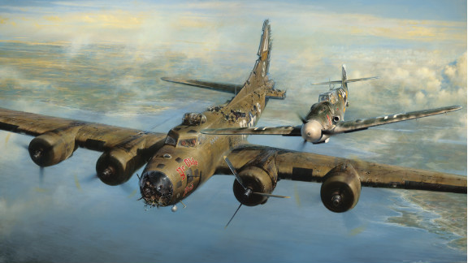

Brothers, Heroes, Foes
December 20, 1943: The German fighter pilot was taking a great risk. He had seen the faces of the wounded crewmen and decided to spare the damaged B-17 and more—to escort the plane out of Germany. If a civilian or soldier on the ground reported him, the fighter pilot would face a firing squad. In the eyes of his country during war, he was a traitor. But to the defenseless American crew, he was their guardian.
Thanks for take you time!